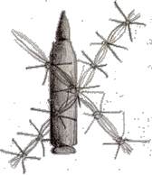

PERSONAL STORIES
"Poetry and bodybuilding"
Iyad Mahmoud Attalah Sa'id Al-Tarifi, "Abu Hadeed", aged 22, Al-Bireh
Right: Iyad (right) at his college graduation ceremony.
Iyad finished a diploma in accounting and office management at college two years ago before his death and began working as an accountant immediately after graduation. However, he was unsatisfied with only having a diploma and decided to continue studying, enrolling at Al-Quds Open University, combining studying and work. Iyad was also studying computer science and programming at Ramallah Higher Education Center.
Iyad always needed to be busy, and it was not unusual to find him working on three or four things at once. A normal day for Iyad was to work as an accountant in a local office in the morning, come home and then head off to the Ramallah Higher Education Center, disappearing whenever he had free time from these studies to attend workshops concerning his work.
Iyad was only an average student at school, and his real love was sports. He started to practice gymnastics at school and used to copy and practice routines from the circus when he was very young. In fourth grade he lost his right eye during training. He had an unsuccessful operation to try and repair it, so his right eye was replaced by a glass one and he only had the use of his left eye. After that he gave up gymnastics and turned to martial arts. He also used to swim a lot, coming often to Birzeit village to swim with his friends in one of the pools there.
Before he finished school he took up body building which he practiced until his death. For the past six years he had been a member of a local body building club and trained regularly. His mother recalls how he used to eat everything, especially proteins for body building, "He used to throw everything into his blender, which he had gone to great lengths to purchase for 500 NIS (about $150). He would take great care to eat healthily. His favorite dish was Roumanieh, a dish made with lentils and pomegranates. 'Just throw it all in,' he would say, at which we would all laugh."
Above (from right to left): Iyad's sister, her
husband, Iyad's mother and Iyad himself.
He worked as a newspaper boy when he was 11 years old, delivering papers to local subscribers. On one occasion he was caught by Israeli soldiers distributing political leaflets within the newspapers, at a time when political activism was illegal amongst Palestinians. It led to his first experience in prison.
He was arrested twice, the second time while he was studying at college. His mother used to take him his books so he could continue his studies while he was in prison. It was then that Iyad began to smoke, a habit that he couldn't kick despite being very conscious of his health. He spent about three months in jail and was released after the peace agreements were signed in 1993. He loved the songs of Marcel Khalife and the poetry of Mahmoud Darweesh. While in prison he wrote poetry in an attempt to express himself.
Iyad used to love to watch wrestling on TV but his favorite program was America's Funniest Home Videos. When watching he would laugh so hard that people in the neighborhood could hear him howling.
Iyad had nine brothers and sisters. He was very close to his mother and often talked to her about what was on his mind. He dreamed that one day he would be able to build a house for himself on a piece of property that the family owned outside of Al-Bireh. He was unhappy with the crowded situation and noisy atmosphere that surrounded him in Al-Bireh, where all of his family lived.
Above: Iyad (left), his mother and brothers
and sisters, with his brother Ziyad in the front.
Iyad often had conflicts with his father who was very strict because of his constant fear for his children. Iyad and his father would often get into arguments, with Iyad leaving the house and driving around for hours. He would then return home and sneak back into the house. Later, his friend Sa'id said that he never looked for excuses to redeem his father's actions towards him. His only reaction was to the strictness that he faced.
Before he died, he got into an argument with his father about staying out late at night. Iyad would often go out with his friends to parties or weddings, and would come home late. It had reached a point where his father forbade him to stay out late and this time his father told him to get out of the house. Iyad ran out, taking his car keys and driving off. His mother, worrying about him throughout the night, found out the next day that Iyad had spent the night in the barn behind their home.
Above (from left to right): Iyad's mother,
'Allaam his brother, and father.
He would often fight with his younger brother, Ziyad, because they didn't see eye to eye politically. They used to get into arguments whenever they heard something about a particular political movement on TV, and embark on the inevitable political discussions that characterize Palestinian life in the West Bank. Yet, in the end, they both knew they were brothers and would help each other out if need be.
Above: Iyad and Ziyad rolling around in the snow in
Ramallah while a family member looks on.
Iyad loved his sisters very much and was very protective of them. He also adored his younger brother Atallah, who was 5 years old. He used to drive Atallah to his day care center before going to work every morning. One of Iyad's friends, Sa'id, was a neighbour and co-worker, and the two of them would drive to work together each morning. One morning, Sa'id said that they wouldn't have time to drop Atallah off at the day care center because they would be late for work. Iyad got very angry at Sa'id for saying this, because of his love for Atallah, and told Said to shut up or to get out of the car. Said also became angry and decided to get out of the car, and the two did not speak for two days. After that, they both forgot about it and, things returned to normal. Iyad did not earn the nickname, "Abu Hadeed", meaning "father of steel", for nothing!
Above: Iyad's favourite brother Atallah.
Once Iyad, Sa'id and Iyad's cousin Aydah, while selling encyclopedias and dictionaries for a company, visited the head of An-Najah School. Iyad started to talk, "We've got dictionaries, and encyclopedias.." Suddenly he froze, not knowing what to say next. "Sa'id," he said, looking at his friend desperately, "you can continue." After they left, they all started laughing, including Iyad, because he could not understand what had overcome him.
He earned the nickname of "chicken" after an incident one night in Ramallah. Iyad always carried martial arts nunchucks with him and one night, he was walking down the street with some friends when an Israeli military jeep started coming towards them. When Iyad saw them coming, he threw his nunchucks off to the side, so that the soldiers wouldn't see them. The soldiers noticed that they had thrown something off to the side and so they became suspicious of them, and stopped to search the guys. They didn't find anything and after the soldiers left them, his friends started calling him chicken and teasing him for throwing the nunchucks. The soldiers would have passed by without stopping if he hadn't thrown them.
Above: Iyad bedroom wall, with his nunchucks
hanging next to his graduation photo (top).
A few months before he died, Iyad was thinking of getting married. He wanted to marry a cousin in Amman, and had asked his parents to ask for her hand. His parents had told him that he should wait until he builds himself up financially and could support a family. However, he later discovered that she had refused Iyad's hand because he was poor. A week after he had found out, the clashes erupted.
Right: A doodle by Iyad.
Iyad was shot dead at 2:30 pm on Thursday 26 September 1996 by bullets from an Israeli helicopter, which destroyed his liver and kidneys. He died four hours later, at 6:30 pm.
After his death, the family went to copy one of his photos and they discovered that the studio where they had gone had a couple of films that Iyad had given to be developed before his death. He enjoyed photography, taking many self portraits. He loved photographing and seeing himself in photographs.
Just before he was killed he applied for a position at the Central Statistics Bureau and his family received an envelope accepting him for work, two months after his death. The family phoned the bureau to tell them that Iyad had been killed two months before during the clashes. The bureau gave the family a month's salary, even though he never had the opportunity to work for them.
Back to PERSONAL STORIES or on to the NEXT STORY